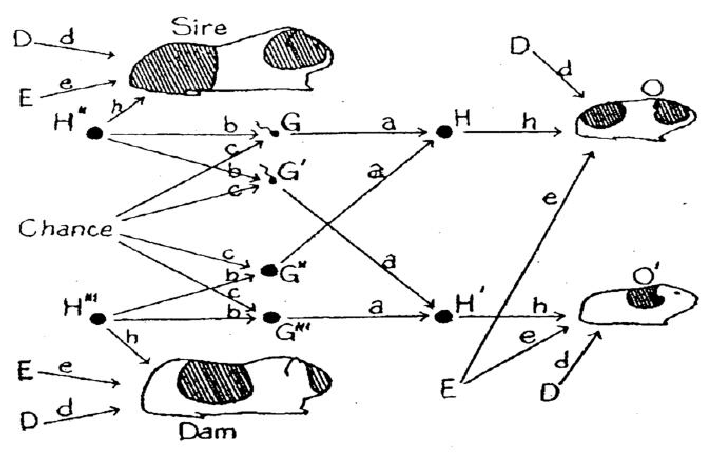

A Circle, an Equation, and a Cylinder

Causal Inference IV − A Circle, an Equation, and a Cylinder
Keywords: causal model, language & writing, probability model
問いの答えは、どの抽象表現で世界を見るかで変わる
私「お父さんさ、丁寧なのはいいんだけど。合流点の説明ってもっと簡単にできないの？この条件付確率分布の式がきっついわ」
お父さん「その気持ちはわかるよ、でも式を出さないと正確じゃないと思って」
私「それ自体はありがたいんだけどね。たとえ話とかでも十分そうだけど」
お父さん「でもさ、最初の質問覚えてる？“確率モデルでもRubin因果モデルでも、交絡の説明が不足しているんじゃないか”、そこが出発点だったよね。だから、合流点を何か別のものに置き換えるだけでは足りないんだ」
私「まあそうだけど」
お父さん「具体的な式をナプキンを書いたのは理由がある。同じものをDAGと数式の2通りで表現していることを知ってほしかったんだ。抽象的な表現を併用することは意外に多い。ここにマグカップがあるよね」
私「いつもコーヒーを飲んでるやつね」
お父さん「これを上から見てごらん」
私「ん？こう？」
お父さん「そう。円が見えるでしょ」
私「そうだね。それがどうかしたの？」
お父さん「数学の授業で、x軸とy軸をとると円はこんな方程式で表せるって習ったでしょ。DAGと条件付確率の式の関係は、これに似ている」
\[x^2+y^2=r^2\]
私「円は見た目、円の式は数式って意味？」
お父さん「そう。共通の分析対象を、別の表現で扱ってるでしょ。円の話をするとき、数式が要らなかったら、円の絵を描いた方がはやいよね。DAGもそう。条件付確率の式から、つながり方だけを抜き出した射影なんだ。分布の形やデータの型は捨て、複雑な式をいったん横に置いて必要な構造だけを見るためにね。DAGは、つながり方だけを見るためのトポロジカルな道具なんだ」
私「そりゃあ、矢印でつながってるだけの方が、まずはわかりやすいよ」
お父さん「じゃあ今度はマグカップを斜めから見てごらん」
私「ん。円が立体になるっていいたいんだよね」
お父さん「その通り、マグカップが円柱として見える。この円柱はRubin因果モデルの潜在結果変数みたいなものじゃない？上から観測できるデータだけじゃ、全体はわからないよね。それが観測できない潜在結果変数なんだ」
私「ほえー詩人だね」
お父さん「1つのマグカップの中に、確率モデル、DAG、Rubin因果モデルという3つの構造が隠れている。抽象的な構造に基づいてデータから情報を引き出す。それも、単なる情報処理や圧縮じゃなく、患者さんのための知識を得るためにね。統計解析は人間のためのもの。だからこそ、どの抽象表現で世界を見るかが大事になる」
変数をどう選ぶ
私「でもね、私にとっては、モデルよりも変数の選び方の方が切実な問題なんだ。ピロリ菌除菌のDAGでいえば、ピロリ菌除菌の有無の他に、胃がん発生、性格、年齢、体質という変数をDAGに入れたでしょ。実際の研究でどうやって選ぶの？」
お父さん「そこが難しいんだけど、医学知識や研究デザインを根拠にもっともらしいDAGを描くしかないね。胃がんリスク因子だとか、ランダム化臨床試験なら治療割付と共変量は独立なはず、だとか」
私「そうするとDAGの変数が無限に増えちゃうと思うんだ。だって胃がんが発生するためには、消化管が発生しないといけないでしょ。そうすると、その前にはミクロレベルでは細胞があり、マクロレベルでは生物がないとおかしいよね。ピロリ菌除菌を受ける原因だって、社会的要因かもしれないし」
お父さん「ああ、そういう発想もあるね。因果観のなかには、単にある原因と結果を結びつけるだけじゃないものもある。あらゆる物質がNewton力学に従っているようにね」
私「いま物質の話をしてないんだけど」
お父さん「うん。じゃあ枠組みをもう少し広くしよう。日本語には”因果”と並んで”縁起”という言葉がある。因果は原因と結果を意味するよね。一方の縁起は、あらゆる出来事や認識が重なって、結果が生じるという文脈で使われる。でも、ランダム化臨床試験や観察研究の分析対象は、縁起の文脈より、もっと部分的じゃない？」
私「そうだね。知りたいのは医薬品の有効性やピロリ菌除菌の効果だけだね」
お父さん「うん。どの枠組みが正しいかっていう話じゃないよ。臨床研究の場合は、DAGに入れる変数は研究仮説や目的に関わると思われるものにフォーカスしてもいいんじゃないかって言いたいわけ。使用目的は、たとえば交絡因子を特定して、推測の妥当性を吟味することだからね」
DAGはいくつかのアイデアが元になっていますが、そのひとつにSewall Wrightが描いたパスダイアグラムがあります。その最初のものは、1920年にProceeding of the National Academy of Sciencesで発表された論文に載っていたものといわれています。さて、この図は何の因果関係を分析したものでしょうか？
- がんとその原因
- 車の故障とその原因
- QOLとその原因
- モルモットの特徴とその原因
- 正解は4です。

次のエピソード
このシリーズのエピソード
- Three-Variable DAGs: The Smallest Building Blocks of Causal Structure
- A Subtle Distinction between Common Causes and Confounders
- DAGs and Conditional Distributions: Two Languages for the Same Structure
- A Circle, an Equation, and a Cylinder
- Backdoor Paths, Block, and d-Separation: A Clue for Adjusting for Bias
過去のシリーズ
- A Story of Coffee Chat and Research Hypothesis
- Reading a Paper over a Cup of Coffee
- R Demonstration of Bias in Kaplan-Meier Under Competing Risks
- Silent Confusions Hidden in Percentages
- Understanding Collapsibility of Effect Measures: Marginal vs Stratified
用語集